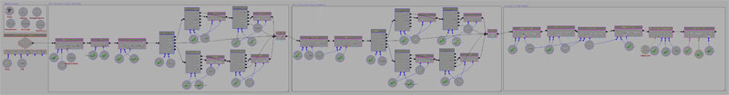

UDN
Search public documentation:
MobileInputSystem
日本語訳
中国翻译
한국어
Interested in the Unreal Engine?
Visit the Unreal Technology site.
Looking for jobs and company info?
Check out the Epic games site.
Questions about support via UDN?
Contact the UDN Staff
中国翻译
한국어
Interested in the Unreal Engine?
Visit the Unreal Technology site.
Looking for jobs and company info?
Check out the Epic games site.
Questions about support via UDN?
Contact the UDN Staff
UE3 Home > Mobile Home > Mobile Input System
Mobile Input System
Overview
There are three different methods to manage touch and motion input on your device. The simplest way is through the MobileInputZones which can be thought of as pre-designed input subsystems. If input zones do not give you the level of control you need, the entire input system can be managed in Unrealscript using several delegates located in the MobilePlayerInput class. Finally, a set of Kismet events and actions are available allowing for quick prototyping.
MobilePlayerInput
The
MobilePlayerInput class is the hub for all input from the player on mobile devices. It takes in the touch input from the device's screen as well as motion input from the various motion sensors available on the device. Access to this input is then provided through properties and accessor functions (or delegates in some cases).
MobilePlayerInput is defined as within(GamePlayerController), meaning it can only be used in classes which inherit, either directly or indirectly through its hierarchy, from the GamePlayerController class. To force the MobilePlayerInput class to be used, assign it to the InputClass property in the defaultproperties block of your custom PlayerController class (which extends from GamePlayerController of course).
defaultproperties
{
InputClass=class'GameFramework.MobilePlayerInput'
}
MobilePlayerInput Properties
Menus
- InteractiveObject - The
MobileMenuObjectthe user is currently interacting with. For example, if the user presses on a button, it becomes theInteractiveObjectuntil the user raises their finger causing an UnTouch event. - MobileMenuStack - The array holding the stack of mobile menu scenes to render and pass input to. See the Mobile Menu Technical Guide for more information on mobile menu scenes.
Motion
- MobilePitch - The current tilt value of the device's gyroscope, if available.
- MobilePitchCenter - The center value for the device pitch.
- MobilePitchMultiplier - Scaling factor for the device's pitch, adjusting sensitivity to pitch motion.
- MobileYaw - The current yaw value of the device's gyroscope, if available.
- MobileYawCenter - The center value for the device yaw.
- MobileYawMultiplier - Scaling factor for the device's yaw, adjusting sensitivity to yaw motion.
- MobilePitchDeadzoneSize - The distance from the
MobilePitchCenterthat theMobilePitchvalue must be to be considered for input. This would be used if motion input was being used for controls in the game. - MobileYawDeadzoneSize - The distance from the
MobileYawCenterthat theMobileYawvalue must be to be considered for input. This would be used if motion input was being used for controls in the game. - DeviceMotionAttitude - A
Vectordescribing the attitude or orientation of the device.- X - Represents rotation around the axis coming straight out from the screen.
- Y - Only valid if the device has a gyroscope.
- Z - Represents rotation around the horizontal axis of the device.
- DeviceMotionRotationRate - A
Vectorholding the rate of change of the device's attitude. This value is much more accurate on devices with a gyroscope. - DeviceMotionGravity - A
Vectorholding the gravity vector of the device. Only valid if the device has a gyroscope. - DeviceMotionAcceleration - A
Vectorholding the current linear acceleration of the device. Only valid if the device has a gyroscope. - bDeviceHasGyroscope - TRUE if device has a gyroscope.
- DeviceGyroRawData - A
Vectorholding the raw gyroscope motion data. Values are in the range [0.0, 1.0]. - bDeviceHasAccelerometer - TRUE if device has an accelerometer.
- DeviceAccelerometerRawData - A
Vectorholding the raw accelerometer data. Values are in the range [0.0, 1.0].- X - Roll. Represents rotation around the axis coming straight out from the screen.
- Y - Portrait Pitch. Represents rotation around the horizontal axis in portrait orientation.
- Z - Lanscape Pitch. Represnts the rotation around the horizontal axis in landscape orientation.
- MobileSeqEventHandlers - An array of
SeqEvent_MobileBaseevents looking to listen in on Motion events.-
 Note: This is still used as of UDK Feb 2012
Note: This is still used as of UDK Feb 2012
-
- aTilt - A vector describing the current orientation of the mobile device. (Used in UDK Feb 2012)
- aRotationRate - A vector describing the rate of change of the tilt. (Used in UDK Feb 2012)
- aGravity - A vector describing the gravity detected by the mobile device. (Used in UDK Feb 2012)
- aAcceleration - A vector describing the linear acceleration detected by the device. (Used in UDK Feb 2012)
Touch
- NumTouchDataEntries - Constant. Sets the number of touches that are tracked concurrently. This is set to 5.
- Touches - An array of
TouchDatastructures representing the touches being tracked. - MobileDoubleTapTime - The maximum amount of time that can elapse between 'taps' to register as a 'double tap'.
- MobileMinHoldForTap -The minimum amount of time in seconds a touch must be held to register as a 'tap'.
- MobileTapRepeatTime - The amount of time that will elapse between sending touch events for a touch that is being held.
- bAllowTouchesInCinematic - If TRUE, touch input will be allowed and registered during cinematic sequences.
- bDisableTouchInput - If TRUE, touches will not be registered as input.
- bFakeMobileTouches - TRUE if the game is run with the
-simmobileor-simmobileinputcommand line argument. - MobileInactiveTime - The amount of time in seconds that no touch input has been registered.
- MobileRawInputSeqEventHandlers - An array of
SeqEvent_MobileRawInputevents looking to listen in on raw touch events
Zones
- MobileInputGroups - An array of available input MobileInputGroups.
- CurrentInputGroup - References the currently active MobileInputGroup.
- Note: This has been renamed to CurrentMobileGroup as of UDK Feb 2012
-
- MobileInputZones - An array of the existing MobileInputZones.
- MobileInputZoneClasses - An array of class names mapped to the names of the MobileInputZones.
- ZoneTimeout - The maximum amount of time that a zone can go without input before being consider timed out.
MobilePlayerInput Delegates
- OnInputTouch() [Handle] [Type] [TouchLocation] [DeviceTimestamp] - Called by the engine when any touch event occurs.
- Handle - The unique identifier of the touch. See the TouchData section for more information.
- Type - The
ETouchTypetype of the touch event. See the Touch Events section for more information. - TouchLocation - The
Vector2Dlocation of the touch event in screen coordinates (pixels). - DeviceTimestamp - The time the touch event occurred.
- OnMobileMotion() [PlayerInput] [CurrentAttitude] [CurrentRotationRate] [CurrentGravity] [CurrentAcceleration] - Called by the engine when motion occurs on the device. NOTE: Depending on the device hardware, Gravity and Acceleration might not be valid. Note: This no longer exists in UDK Feb 2012
- PlayerInput - A reference to the
PlayerInputthat owns the delegate. - CurrentAttitude - A
Vectorholding the current attitude (Pitch, Yaw, Roll) information of the device. Note: Yaw will only be valid if the device has a gyro. Also, these values are independent on landscape vs. portrait. - CurrentRotationRate - A
Vectorholding the current rate of change of the device's attitude. This value is much more accurate on devices with a gyroscope. - CurrentGravity - A
Vectorholding the gravity vector of the device. Only valid if the device has a gyroscope. - CurrentAcceleration - A
Vectorholding the current linear acceleration of the device. Only valid if the device has a gyroscope.
- PlayerInput - A reference to the
- OnTouchNotHandledInMenu() - Invoked when the mobile menus did not process an
Touch_Began. - OnPreviewTouch() [X] [Y] [TouchpadIndex] - Returns true/false for touches handled/not handled.
- X - Screen space X coordinate
- Y - Screen space Y coordinate
- TouchpadIndex - Which touch pad was touched
MobilePlayerInput functions
Initialization
- InitInputSystem() - Called by the
PlayerControllerafter the input system is created. Currently forces the touch input system to be initialized. Subclasses should override this to perform additional initialization. - ClientInitInputSystem() - Called on the client after the input system is created. Currently forces the touch input system to be initialized. Subclasses should override this to perform additional initialization.
- InitTouchSystem() - Sets up the touch input system if mobile simulation is enabled or the game is running on a mobile device.
- NativeInitializeInputSystem() - Native. Called by
InitTouchSystem()native initialization of the input subsystem. - InitializeInputZones() - Queries the needed input zones from the game type and initializes them.
- NativeInitializeInputZones() - Native. Called by
InitializeInputZones()to initialize the input zones by iterating over them and calculating their bounds based on the current device resolution.
Input Events
- SendInputKey() [Key] [Event] [AmountDepressed] - Sends an input key event, such as presses of the keys on the keyboard. This provides the ability to manually translate mobile input to standard keyboard input.
- Key - The
Nameof the key for which an event occurred. (KEY_Up, KEY_Down, etc.) - Event - The
EInputEventtype of the input event. (IE_Pressed,IE_Released,IE_Repeat_,IE_DoubleClick,IE_Axis) - AmountDepressed - The amount the key is pressed for analog keys.
- Key - The
- SendInputAxis() [Key] [Delta] [DeltaTime] - Sends an input axis event, such as a joystick, thumb stick, or mouse movement. This provides the ability to manually translate mobile input to standard control input.
- Key - The
Nameof the axis that moved. (KEY_MouseX, KEY_XboxTypeS_LeftX, etc.) - Delta - The amount the axis moved.
- DeltaTime - The amount of time in seconds since the last update for the axis.
- Key - The
Input Zones
- FindZone() [ZoneName] - Searches for and returns an input zone by name from the
MobileInputZonesarray.- ZoneName - A
Stringspecifying the name of the input zone to search for.
- ZoneName - A
- FindorAddZone() [ZoneName] - Searches for and returns an input zone by name from the
MobileInputZonesarray. If the input zone is not found, a new zone is created, added to theMobileInputZonesarray, and a reference to the new zone is returned.- ZoneName - A
Stringspecifying the name of the input zone to search for and/or add.
- ZoneName - A
- HasZones() - Returns whether the
MobilePlayerInputcurrently has any input zones. - GetCurrentZones() - Returns all of the input zones associated with the current input group as an array of
MobileInputZones. - ActivateInputGroup() [GroupName] - Exec. Sets a new input group as being active, and therefore able to receive input.
- GroupName - A
Stringspecifying the name of the input group to set active.
- GroupName - A
- SetMobileInputConfig() [GroupName] - Exec. Sets a new input group as being active, and therefore able to receive input.
- GroupName - A
Stringspecifying the name of the input group to set active.
- GroupName - A
Kismet
- RefreshKismetLinks() - Registers all
SeqEvent_MobileBaseandSeqEvent_MobileRawInputevents in the level's Kismet sequence, assigning them as handlers. - AddKismetEventHandler() [NewHandler] - Adds a
SeqEvent_MobileBaseKismet event as a new mobile motion event handler which will receive input events when motion occurs. - AddKismetRawInputEventHandler() [NewHandler] - Adds a
SeqEvent_MobileRawInputKismet event as a new mobile touch event handler which will receive input events when touches occur.
Menu Scenes
- OpenMenuScene() [SceneClass] [Mode] - Opens a new menu scene of the given class. Returns a reference to the opened scene.
- SceneClass - Specifies the class of menu scene to open. Must be a subclass of
MobileMenuScene. - Mode - Optional. Specifies a string to be passed to the scene's
Opened()function.
- SceneClass - Specifies the class of menu scene to open. Must be a subclass of
- CloseMenuScene() [SceneToClose] - Closes the specified menu scene.
- SceneToClose - References the scene to be close.
- CloseAllMenus() - Closes all menu scenes in the scene stack.
- RenderMenus() [Canvas Canvas] [RenderDelta] - Called by the engine each frame to render all the menus in the scene stack.
- Canvas - References the
Canvasto use to draw the scene. - RenderDelta - Holds the amount of time since the last render cycle.
- Canvas - References the
- MobileMenuCommand() [MenuCommand] - Exec. Passes a command to all scenes in the stack until one hanldes the command, by returning TRUE.
- MenuCommand - A
Stringspecifying the command to pass to the scenes.
- MenuCommand - A
- OpenMobileMenu() [MenuClassName] - Exec. Opens a menu scene given a class in the form of a string.
- MenuClassName - Specifies the name of the class of menu scene to open in the form of a string.
- OpenMobileMenuMode() [MenuClassName] [Mode] - Exec. Opens a menu scene given a class in the form of a string, with an optional mode.
- MenuClassName - Specifies the name of the class of menu scene to open in the form of a string.
- Mode - Optional. Specifies a string to be passed to the scene's
Opened()function.
TouchDataEvent
TheTouchDataEvent structure contains data for individual touch events queued for a specific touch handle. Each time a touch event is detected for a touch, a new TouchDataEvent is constructed to hold the data for that specific event. These can then be processed by the input system in order as soon as possible.
- EventType - The
ETouchTypetype of the touch event. - TouchpadIndex - What touch pad this came from.
- Location - The
Vector2Drepresenting the location of the touch event in screen coordinates (pixels). - DeviceTime - The timestamp of when the event occurred.
TouchData
TheTouchData structure holds all the information about a specific touch throughout its lifetime, from when the user first touches the screen until the user lifts their finger off the screen. The current active touches on the device are stored in the Touches array, allowing access to the current state of the touch input on the device.
- Handle - An
Intspecifying a unique ID for this individual touch. - TouchpadIndex - What touch pad this came from.
- Location - A
Vector2Dholding the current location, in screen space, of the touch, according to the most recent touch event. - TotalMoveDistance - The total distance, in pixels, that the touch has moved since the initial touch event.
- InitialDeviceTime - The timestamp from when the initial touch event occurred.
- TouchDuration - The amount of time in seconds that the touch has been active.
- MoveEventDeviceTime - The timestamp from the most recent touch event for this touch.
- MoveDeltaTime - The amount of time in seconds between movement events the last time the touch moved.
- bInUse - If TRUE, the touch entry is currently in use. Otherwise, it is no longer active and can be appropriated for a new touch.
- Zone - The
MobileInputZonethat is currently processing the touch. - State - The
EZoneTouchEventtype of the most recent touch event for this touch. See Touch Events for more information. - Events - An array of
TouchDataEventsholding all touch events for this touch over its lifetime. - LastActiveTime - The last time the touch was active. This is used to determine if a zone is timed out.
Input Zones
Input zones are essentially touch controls that can take input from touchscreen devices and translate that input into usable data. The same way a key bind can take a key press and translate that into data used by the game to control player movement or other in-game events, an input zone can take touch input and perform this same function. In fact, input zones actually use the same key bind system to bind the input to the action, as you will see later on.
Input Groups
An input group is a collection of associated input zones. For instance, the left and right control sticks seen in the Epic Citadel example game belong to a single input group. Each game can have any number of input groups assigned to it and any one of these input groups can be active at any point during the game. An input zone can also belong to more than one input group, making them reusable by multiple games or for multiple uses within a single game. TheMobileInputGroup structure is used to represent an input group. It simply maps a unique name to identify the group with an array of input zones that make up the group.
- GroupName - A
Stringspecifying the unique name of the input group. - AssociatedZones - An array of
MobileInputZonesbelonging to the input group.
RequiredMobileInputConfigs array of an individual game type. For more on this, see the Defining Input Groups section.
MobileInputZone
TheMobileInputZone class is the base class for defining areas of the screen that take touch input from the user and translate it in to standard UE3 input/axis events.
MobileInputZone Properties
General
- Type - The
EZoneTypespecifying the type of input zone (button, joystick, trackball, slider). See the Input Zone Types for more information. - State - The
EZoneStatedescribing the current state of the input zone. See the Input Zone States for more information. - SlideType - The
EZoneSlideTypedescribing the direction the zone slides if the zone is a slider (Type=ZoneType_Slider) - InputOwner - The
MobilePlayerInputresponsible for managing the input zone. - MobileSeqEventHandlers - An array of the
SeqEvent_MobileZoneBaseKismet events associated with the input zone.
Input
- InputKey - The
Nameof the input key to send to the input subsystem on an input event from this input zone. For analog input types, this is for input events along the vertical axis. - HorizontalInputKey - The
Nameof the input key to send to the input subsystem on an input event along the horizontal axis from this input zone. Only used for analog input types. - TapInputKey - The
Nameof the input key to send to the input subsystem on a tap input from this input zone. - DoubleTapInputKey - The
Nameof the input key to send to the input subsystem on a double-tap input from this input zone. - VertMultiplier - The scaling factor to multiply analog input along the vertical axis by. Determines how sensitive the input zone is on the vertical axis.
- HorizMultiple - The scaling factor to multiply analog input along the horizontal axis by. Determines how sensitive the input zone is on the horizontal axis.
- Acceleration - The amount of acceleration (actually defined as: movement per second) to apply to trackball input zone movement.
- Smoothing - The amount of input smoothing to apply to trackball input zone movement.
- EscapeVelocity - A
Vector2Dholding the vertical and horizontal input movement to apply after the touch has ended. This is like inertial movement, such as the behavior seen in scrolling lists on iOS devices where the list continues to scroll even after the touch has ended. - EscapeVelocityStrength - Specifies the amount of escape velocity to use each update. This value is in the range [0.0, 1.0]. Higher values mean a faster falloff.
- bScalePawnMovement - If TRUE, the input values of the zone will be multiplied by the local PlayerController's Pawn's
MovementSpeedModifiervalue. - bQuickDoubleTap - If TRUE, a double-tap will cause a simple press and release (IE_Pressed, IE_Release) of the
DoubleTapInputKeyon the touch event. Otherwise, a double tap will cause a press (IE_Pressed) of theDoubleTapInputKeyon the touch event, a repeat (IE_Repeat) of theDoubleTapInputKeyon each update event, and a release)IE_Release) of theDoubleTapInputKeyon the untouch or canceled event. - TapDistanceConstraint - The maximum distance a touch can move from the touch event to the untouch event to be considered a tap.
- bAllowFirstDeltaForTrackballZone - If TRUE, the first movement delta for a trackball zone will be used. Otherwise, the first movement delta for a trackball zone will be ignored. This is useful for devices with inconsistent 'dead zones' for initial touch deltas, however this will reduce responsiveness of trackball drags slightly.
- InitialLocation - The initial location of the touch event when a new touch occurs within the zone.
- CurrentLocation - The current location of the touch in the zone. Only applies to joystick and trackball zones.
- InitialCenter - The actual center of the zone, given its bounds. Used to reset zones using
bCenterOnTouch=true(usually joystick zones). - CurrentCenter - The current location used as the center for input events. Updated to the initial touch location of zones using
bCenterOnTouch=true(usually joystick zones) when a new touch occurs. - PreviousLocations - The (6) most recent touch event locations for the zone to be used when smoothing input over frames. Only applies to joystick and trackball zones.
- PreviousMoveDeltaTimes - The (6) most recent touch event time deltas for the zone to be used when smoothing input over frames. Only applies to joystick and trackball zones.
- PreviousLocationCount - The number of previous touch locations and time deltas currently being stored and used for smoothing input over frames.
- LastTouchTime - The time of the last touch event in the zone. Used to determine if a tap is a double tap.
- TimeSinceLastTapRepeat - The amount of time since the last repeat (IE_Repeat) of the
InputKeyfor button zones. - bIsDoubleTapAndHold - TRUE if a double-tap occurs that is not considered a 'quick double-tap'. Needed so that the repeat and release (IE_Repeat, IE_Release) of the
DoubleTapInputKeyis sent. - LastAxisValue - A
Vector2Dholding the cached input values from the last update. Only applies to joystick and trackball zones. - TotalActiveTime - The amount of time the zone has been active.
- LastWentActiveTime - The time when the zone last went from inactive to active.
Position and Size
- [X/Y] - The horizontal and vertical position in screen coordinates of the top-left corner of the input zone. (Either in pixels or relative depending on
bRelative[X/Y]) - Size[X/Y] - The width and height of the input zone. (Either in pixels or relative depending on
bRelativeSize[X/Y]) - ActiveSize[X/Y] - The width and height of the 'active zone'. See the Sizing and Positioning section for more information.
- bRelative[X/Y] - If TRUE, the horizontal or vertical position of the top-left corner of the zone will be assumed to be relative values in the range [0.0, 1.0].
- bRelativeSize[X/Y] - If TRUE, the width and height of the zone will be assumed to be relative values in the range [0.0, 1.0].
- bActiveSizeYFromX - If TRUE, the
ActiveSizeYvalue will be assumed to be relative to the value ofActiveSizeX. - bSizeYFromSizeX - If TRUE, the
SizeYvalue will be assumed to be relative to the value ofSizeX. - bAppleGlobalScaleToActiveSizes - If TRUE, the horizontal and vertical global scaling factors will be applied to the
ActiveSize[X/Y]values. This can be useful to keep the size of the control accurate on devices of differing resolutions or screen sizes. - bCenter[X/Y] - If TRUE, the zone will be centered on the
[X/Y]values specified in the config instead of having them represent the top-left corner. The[X/Y]values will then be updated to reflect the actual top-left corner of the zone. - bCenterOnEvent - If TRUE, the
CurrentCenterof the zone will be adjusted to the location of all new touch events. This is useful for creating controls which auto-position to the user's touch (within a certain area), such as the joysticks in Epic Citadel. - ResetCenterAfterInactivityTime - If
bCenterOnEventis TRUE and this is a non-zero value, theCurrentCenterposition will be reset to itsInitialCenterafter this amount of time has passed with the zone being inactive. - Border - The distance around the outside of the zone to be included in determining if touches are within the zone or not.
- bFloatingTiltZone - If TRUE, the tilt zone will float within the
Size[X/Y]. Does not appear to be used.
Rendering
- OverrideTexture[1/2] - Specifies the
Texture2Dsused to override the zone textures. * For Button zones,OverrideTexture1is the texture drawn when the button is inactive, andOverrideTexture2is the texture drawn when the button is active. * For Trackball and Joystick zones,OverrideTexture1is drawn as the background (the hollow circle seen in Citadel), andOverrideTexture2is the "hat" that follows the finger. * For Slider zones,OverrideTexture1is the slider graphic, andOverrideTexture2is unused. - OverrideTexture[1/2]Name - A string specifying the full path to the texture, e.g. "Package.Group.Name".
- OverrideUVs[1/2] - Specifies the texture UVs in texels (meaning texture pixel values) used to describe the sub-region of OverrideTexture[1/2] to draw.
- Caption - The text to display for the zone. This is only used for buttons currently and is drawn centered within the zone.
- Caption[X/Y]Adjustment - Horizontal and vertical offsets for the position of the zone's
Captionallowing for fine adjustment of the text to align fonts correctly. - bIsInvisible - If TRUE, the zone will be rendered.
- bUseGentleTransitions - If TRUE, the zone will gradually transition from the inactive to active and vice-versa visually. Otherwise, the change is immediate. NOTE: This is purely visual. The actual state of the zone changes immediately the moment a touch begins or ends.
- ActivateTime - The amount of time it takes for the zone to visually transition from inactive to active.
- DeactivateTime - The amount of time it takes for the zone to visually transition from active to inactive.
- bRenderGuides - If TRUE, debug lines will be rendered for the zone. This is only used for joystick zones currently and renders a line from the zone's
CurrentCenterto the location of the joystick hat. - RenderColor - The
Colorto use when drawing the zone. This will modulate any images or text making up the visual representation of the zone. TheCanvasdraw color is set to this color before calling the appropriate zone drawing function in theMobileHUD. - InactiveAlpha - The opacity to draw the zone at when inactive.
- AnimatingFadeOpacity - The current opacity of the fading effect used when re-centering the zone after a period of inactivity.
- TransitionTime - The current amount of time elapsed during the transition of the zone from inactive to active or vice-versa.
MobileInputZone Delegates
- OnProcessInputDelegate() [Zone] [DeltaTime] [Handle] [EventType] [TouchLocation] - Called when any input event occurs within the zone allowing completely custom input handling for any zone or for input in a zone to be handled by other classes. Return TRUE to acknowledge the input as being handled. Returning FALSE will pass the input on, processing it in the
ProcessTouch()function according to the type of zone.- Zone - A reference to the Zone the delegate belongs to.
- DeltaTime - The amount of time since the last input event for the zone.
- Handle - The unique identifier of the touch responsible for the input event.
- EventType - The
EZoneTouchEventtype of the input event. - TouchLocation - The
Vector2Dspecifying the horizontal and vertical location of the touch event in pixel screen coordinates.
- OnTapDelegate() [Zone] [EventType] [TouchLocation] - Called when a tap occurs within the zone allowing completely custom handling for taps or for taps in the zone to be handled by other classes. Return TRUE to acknowldge the tap as being handled. Returning FALSE will pass the tap on, processing it in the
ProcessTouch()function.- Zone - A reference to the Zone the delegate belongs to.
- EventType - The
EZoneTouchEventtype of the input event. - TouchLocation - The
Vector2Dspecifying the horizontal and vertical location of the touch event in pixel screen coordinates.
- OnDoubleTapDelegate() [Zone] [EventType] [TouchLocation] - Called when a double-tap occurs within the zone allowing completely custom handling for double-taps or for double-taps in the zone to be handled by other classes. Return TRUE to acknowledge the double-tap as being handled. Returning FALSE will pass the double-tap on, processing it in the
ProcessTouch()function.- Zone - A reference to the Zone the delegate belongs to.
- EventType - The
EZoneTouchEventtype of the input event. - TouchLocation - The
Vector2Dspecifying the horizontal and vertical location of the touch event in pixel screen coordinates.
- OnProcessSlide() [Zone] [EventType] [SlideValue] [ViewportSize] - Called when an input event occurs within a slider zone to allow the value of the slider to be accessed. The return value is not used currently.
- Zone - A reference to the Zone the delegate belongs to.
- EventType - The
EZoneTouchEventtype of the input event. - SlideValue - The location of the slide as a pixel offset [+/-] from the normal resting position.
- ViewportSize - The dimensions of the current viewport, e.g. the device's screen.
- OnPreDrawZone() [Zone] [Canvas] - Called immediately before the zone is rendered by the
MobileHUDallowing the drawing of the zone to be overridden by a custom zone or any otherActor. Return TRUE to abort the standard rendering of the zone.- Zone - A reference to the Zone the delegate belongs to.
- Canvas - References the
Canvasto use for drawing.
- OnPostDrawZone() [Zone] [Canvas] - Called after the zone is rendered by the
MobileHUDallowing the drawing of the zone to be supplemented by a custom zone or any otherActor.- Zone - A reference to the Zone the delegate belongs to.
- Canvas - References the
Canvasto use for drawing.
MobileInputZone Functions
- ActivateZone() - Sets the input zone to either the
ZoneState_ActivatingorZoneState_Activestate depending on the value ofbUseGentleTransitions. - DeactivateZone() - Sets the input zone to either the
ZoneState_DeactivatingorZoneState_Inactivestate depending on the value ofbUseGentleTransitions. - AddKismetEventHandler() [NewHandler] - Associates a new mobile input Kismet event with the input zone that will receive events when touch input occurs for the zone.
- NewHandler - References the
SeqEvent_MobileZoneBaseto add as a new handler.
- NewHandler - References the
Input Zone Types
- Button - The
ZoneType_Buttonzone type creates a zone that has 2 states: pressed and unpressed. It will send its InputKey when it goes from the pressed to the unpressed state. - Joystick - The
ZoneType_Joystickzone type creates a zone that has a virtual stick that allows you to quickly simulate a joypad/stick on the device. The InputKey defines the bind that will be sent when movement along the vertical access occurs. HorizontalInputKey will be sent when horizontal access movement occurs. - Trackball - The
ZoneType_Trackballzone type creates a zone that handles general touches and swipes. When you add a trackball zone, sliding your finger through the zone will have the same affect of rolling a trackball. Like ZoneType_Joystick above, InputKey is for vertical movement, HorizontalInputKey is for Horizontal movement. - Slider - The
ZoneType_Sliderzone type creates a zone that can be used to slide a sub-zone along a locked axis. The SliderZone is designed to be used with script delegates for managing its values. Look to Citadel for examples.
Input Zone States
- Inactive - The input zone is currently inactive
- Activating - The input zone is becoming active
- Active - The input zone is active
- Deactivating - The input zone is becoming inactive
Rendering and Appearance
Rendering the overlays for the input zones is handled by theMobileHud class. If you want to change how they appear, you will want to override the various DrawMobileZone_xxxx functions.
You may also do some basic appearance overriding by using the following properties in the zone. (See the MobileInputZone Rendering Properties section for descriptions of the properties.)
- OverrideTexture[1/2]
- OverrideTexture[1/2]Name
- OverrideUVs[1/2]
Sizing and Positioning
The position and size of a zone is handled by theX, Y, SizeX, and SizeY member variables. There are some important things to note about sizing and positioning. The first has to do with using Negative numbers. They can be used to position or size something from the right/bottom edge of the viewport. For example, having a zone that has SizeX = 32 and X = -32 will be flush with the right edge of the screen. In addition, there are several flags that can be set to have the engine use these values as percentages of the viewport. So if the zone has bRelativeX = true then the value of X will be taken as a percentage of the Viewport's SizeX. Finally, bSizeYFromSizeX can be used to insure proper aspect ratio in varying resolution (ex: iPad vs iPod).
In additional to X, Y, SizeX, and SizeY there is an ActiveSizeX and ActiveSizeY. These can be used to define a "zone within a zone". What this means is that the bounds of the zone can be defined using the X, Y, SizeX, and SizeY properties, but the active part of the zone that actually acts as the control is defined by the ActiveSizeX and ActiveSizeY properties. This is usually used with controls that "center on touch", for example the joysticks in Epic Citadel that move to where you touch the screen within a specific area.
Adding Input Zones
Each zone is defined in theDefaultGame.ini config file. The MobileInputZone system uses per-object-config to manage and load various zones. This means that each input zone will be defined in its own section in the config file. Any of the properties declared with the config specifier can be set in the section defining the input zone in the config file.
An example mobile input zone definition would look like the following:
[UberStickMoveZone MobileInputZone] InputKey=MOBILE_AForward HorizontalInputKey=MOBILE_AStrafe Type=ZoneType_Joystick bRelativeX=true bRelativeY=true bRelativeSizeX=true bRelativeSizeY=true X=0.05 Y=-0.4 SizeX=0.1965 SizeY=1.0 bSizeYFromSizeX=true VertMultiplier=-1.0 HorizMultiplier=1.0 bScalePawnMovement=true RenderColor=(R=255,G=255,B=255,A=255) InactiveAlpha=0.25 bUseGentleTransitions=true ResetCenterAfterInactivityTime=3.0 ActivateTime=0.6 DeactivateTime=0.2 TapDistanceConstraint=5
Defining Input Groups
Any gametype that extends fromFrameworkGame can define a list of required mobile input configs, or input groups. Each config consists of a name that defines it and a list of zones that need to be included. The order in which the input zones are specified in the input group is extremely important. This defines the order in which input is passed to the input zones, and when input is passed to an input zone and is within that zone's bounds, it is handled and not passed to any subsequent zones. This can cause issues if ythe input group has multiple zones which overlap each other. For instance, if one input zone is fullscreen and is added before any other input zones, the subsequent zones will never receive input.
Here is the mobile input config section for the CastleGame gametype used in Epic Citadel:
[MobileGame.CastleGame]
+RequiredMobileInputConfigs=(GroupName="UberGroup",RequireZoneNames=("MenuSlider","UberStickMoveZone","UberStickLookZone","UberLookZone"))
+RequiredMobileInputConfigs=(bIsAttractModeGroup=true,GroupName="AttractGroup",RequireZoneNames=("MenuSlider","ExitAttractModeZone"))
+RequiredMobileInputconfigs=(GroupName="InitialFlybyGroup")
+RequiredMobileInputConfigs=(GroupName="TapTutorialGroup",RequireZoneNames=("MenuSlider","TapTutorialZone"))
+RequiredMobileInputConfigs=(GroupName="SwipeTutorialGroup",RequireZoneNames=("MenuSlider","SwipeTutorialZone"))
bAllowAttractMode=true
MobileInputZones need to be loaded. Each input zone for the current gametype is instanced and stored in the local instance of the MobilePlayerInput class. The important part here is the RequireZoneNames array needs to hold the name used for per-object-config creation in the .ini file. See InitializeInputZones() in the MobilePlayerInput class to see the code. You can change the active input group by calling ActivateInputGroup() on the MobilePlayerInput.
Debugging
Debugging input from the zones can be tricky. We have tried to make this as easy as possible. To start with, there is a full featured emulation mode available on the PC. If you launch the game with the command line parameters:-simmobileor
-simmobileinputThe game will use the mouse to simulate a single touch environment. Additionally, if you use the command line parameter "-wxwindows" you can then use the console command:
editobject class=mobileplayerinputThis will allow view/edit various mobile input properties in real time. In addition, there are several config options that will cause debug information to display on the HUD. They are:
[GameFramework.MobileHUD] bDebugTouches=true bDebugZones=true bDebugZonePresses=true bShowMotionDebug=trueThese are
SET command friendly (ie: set mobilehud bDebugTouches). Give them a try in Citadel.
You can also use the UDKRemote to send input from your device to engine running on a PC. For more information over obtaining and using the UDKRemote application, see the UDKRemote page.
Mobile Input in UnrealScript
Input on mobile devices can be managed in UnrealScript through several delegates found in the
MobilePlayerInput class. There is only one low-level function that you need to be concerned with. By assigning a function to this delegate, you can create a completely custom handling of the touch input from mobile devices that can be set up directly through UnrealScript. This could be done in a subclass of MobilePlayerInput, in your game's custom PlayerController class, or anywhere else there might be a need to handle input from the device.
Touch Input
Any time the user touches the screen, it is considered a 'touch'. The input system has the ability to track multiple touches at one time. Each touch lasts from the time the user comes into contact with the screen and is tracked until the user stops touching the screen.Touch Events
During the lifetime of touch, it generates events that are categorized into different types. These types can be used to determine how to react to the touch at any given point. These types are stored in an enum called ETouchType which is defined in Interaction.uc.- Touch_Began - This event type is sent when the user comes into contact, or touches, the device. It signifies a new individual touch.
- Touch_Moved - This event type is sent each frame between when the first touch occurs and the touch ends. This event allows the touch to be tracked over its lifetime.
- Touch_Ended - This event type is sent when the touch ends, or the user stops touching the device. It signifies the end of an individual touch.
- Touch_Cancelled - This event type is sent when an outside force, like a system message appearing, cancels an existing touch. This also signifies the end of an existing touch.
- Touch_Stationary - This event type is not currently generated.
Handling Touches
The entry point to the touch input system is through a delegate present in theMobilePlayerInput class. This delegate gives you access to raw low level touch data coming from the device. It can and will be called multiple times per frame returning various touch information. It is up to the programmer to track and manage the data coming from here.
- OnInputTouch [Handle] [Type] [TouchLocation] [DeviceTimestamp] -
- Handle - The index into the
Touchesarray identifying this touch. This will be unique throughout the life-time of the touch, but not unique from touch to touch. - Type - The
ETouchTypetype of touch event. See Touch Events for an explanation of the various types of events that can be generated. - TouchLocation - A
Vector2Dthat holds the horizontal and vertical location in pixels of the touch on the device's screen. - DeviceTimestamp - The actual low-level timestamp for the touch.
- TouchpadIndex - Which touch pad invoked this delegate.
- Handle - The index into the
Picking Example
Many different types of games require the ability to interact with arbitrary items in the world, or to detect which item is being touched. This can be done in a very flexible way by using theOnInputTouch() delegate from the MobilePlayerInput class along with an Interface. The use of an interface allows any class that wishes to be considered 'touchable' to have that functionality, while keeping the code required to support that ability very succinct.
ITouchable Interface
TheITouchable interface is very simple. It declares a single function, OnTouch(), that will be called from the custom PlayerController class (detailed below) whenever an Actor implementing this interface is touched.
Interface ITouchable; function OnTouch(ETouchType Type, float X, float Y);
MobilePlaceablePawn will work.
class UDNMobilePawn extends MobilePlaceablePawn implements(ITouchable);
function OnTouch(ETouchType Type, float X, float Y)
{
WorldInfo.Game.Broadcast(self, "Touched:"@self);
}
implements(ITouchable) states this class must define all functions belonging to the ITouchable interface; in this case the OnTouch() function. This provides a reliable way to communicate with any item that should be touchable. The body of the function just displays a message to the screen showing the item has been touched.
PlayerController Class
The functionality for picking objects will be implemented in thePlayerController class, which will be a subclass of GamePlayerController as extending from this class is a requirement for using mobile touch input.
class UDNMobilePC extends GamePlayerController;
/** Holds the dimensions of the device's screen */ var vector2D ViewportSize; /** If TRUE, a new touch was detected (must be the only touch active) */ var bool bPendingTouch; /** Holds the handle of the most recent touch */ var int PendingTouchHandle; /** Holds the Actor that was selected */ var Actor SelectedActor; /** Maximum distance an Actor can be to be picked */ var float PickDistance; /** Maximum amount the mouse can move between touch and untouch to be considered a 'click' */ var float ClickTolerance; /** Cache a reference to the MobilePlayerInput */ var MobilePlayerInput MPI;
Vectors that can be used with the Trace() function to determine if anything is being touched.
/** find actor under touch location
*
* @PickLocation - Screen coordinates of touch
*/
function Actor PickActor(Vector2D PickLocation)
{
local Vector TouchOrigin, TouchDir;
local Vector HitLocation, HitNormal;
local Actor PickedActor;
//Transform absolute screen coordinates to relative coordinates
PickLocation.X = PickLocation.X / ViewportSize.X;
PickLocation.Y = PickLocation.Y / ViewportSize.Y;
//Transform to world coordinates to get pick ray
LocalPlayer(Player).Deproject(PickLocation, TouchOrigin, TouchDir);
//Perform trace to find touched actor
PickedActor = Trace(HitLocation, HitNormal, TouchOrigin + (TouchDir * PickDistance), TouchOrigin, true);
//Casting to ITouchable determines if the touched actor can indeed be touched
if(Itouchable(PickedActor) != none)
{
//Call the OnTouch() function on the touched actor
Itouchable(PickedActor).OnTouch(ZoneEvent_Touch, PickLocation.X, PickLocation.Y);
}
//Return the touched actor for good measure
return PickedActor;
}
PickActor() function. This requires the use of the OnInputTouch() delegate from the MobilePlayerInput class, as stated previously. First, the function that will be assigned to the delegate is defined.
function HandleInputTouch(int Handle, ETouchType Type, Vector2D TouchLocation, float DeviceTimestamp)
{
local Actor PickedActor;
local int i;
//New touch event
if(Type == Touch_Began)
{
//Specify a new touch has occurred
PendingTouchHandle = Handle;
bPendingTouch = true;
}
//Touch in progress
else if(Type == Touch_Moved)
{
for(i=0; i<MPI.NumTouchDataEntries; i++)
{
//Test distance touch has moved and cancel touch if moved too far; update touch location if not
if(MPI.Touches[i].Handle == PendingTouchHandle && MPI.Touches[i].TotalMoveDistance > ClickTolerance)
{
bPendingTouch = false;
}
}
}
//End of touch
else if(Type == Touch_Ended)
{
//Check if a touch is active
if(Handle == PendingTouchHandle && bPendingTouch)
{
//Get actor under touch
PickedActor = PickActor(TouchLocation);
//Check if actor is touchable and set it as selected; clear current selected if not
if(ITouchable(PickedActor) != none)
{
SelectedActor = PickedActor;
}
else
{
SelectedActor = none;
}
//cancel active touch
bPendingTouch = false;
}
WorldInfo.Game.Broadcast(self, "SelectedActor:"@SelectedActor);
}
}
HandleInputTouch() function to get called when input occurs, it must be assigned to the OnInputTouch() delegate.
event InitInputSystem()
{
Super.InitInputSystem();
//Get a reference to the local MobilePlayerInput
MPI = MobilePlayerInput(PlayerInput);
//Accessing the input handler function to the delegate
MPI.OnInputTouch = HandleInputTouch;
//get the screen dimensions (used to transform to relative screen coords for the DeProject)
LocalPlayer(Player).ViewportClient.GetViewportSize(ViewportSize);
}
InitInputSystem() event is called by the engine to initialize the input system. Prior to the Super.InitInputSystem(); call the system should be initialized and the local MobilePlayerInput is accessible allowing the HandleInputTouch function to be assigned to its OnInputTouch delegate to be assigned.
Finally, some defaults are set for the properties which require them.
defaultproperties
{
PickDistance=10000
ClickTolerance=5
InputClass=class'GameFramework.MobilePlayerInput'
}
GameType
Obviously, it will be necessary for thePlayerController class containing this new functionality to be in use for the object picking to be used. A quick sample gametype is shown here that will force the new PlayerController to be used.
class UDNMobileGame extends FrameworkGame;
defaultproperties
{
PlayerControllerClass=class'UDNMobileGame.UDNMobilePC'
DefaultPawnClass=class'MobileGame.MobilePawn'
HUDType=class'GameFramework.MobileHUD'
bRestartLevel=false
bWaitingToStartMatch=true
bDelayedStart=false
}
DefaultEngine.ini is also modified to specify the new gametype to be used by default.
[Engine.GameInfo] DefaultGame=UDNMobileGame.UDNMobileGame DefaultServerGame=UDNMobileGame.UDNMobileGame DefaultGameType="UDNMobileGame.UDNMobileGame"
Testing
A very simple test map is set up with aPlayerStart and a UDNMobilePawn placed using the Jazz Jackrabbit skeletal mesh and placed in front of the PlayerStart.
First the screen is touched away from Jazz and the result shows no item was touched.
Then, the screen is touched directly over Jazz and the result shows Jazz was touched and selected, as expected.
Motion Input
Motion input refers to using the orientation and movement of the device itself as a means of input. Different devices support different types of motion data (or none at all). Devices with accelerometers provide basic orientation and rotation data, while those with more sophisticated instruments, such as gyroscopes, can produce additional data such as linear motion while also improving the accuracy of the orientation and rotational input data. The motion input data is accessed directly through properties inPlayerInput.
Tilt
The tilt of the device refers to its orientation. As the device is oriented differently, by rotating it around its various axes, the tilt is reported in terms of pitch, yaw, and roll (usually in the form of aVector). These values can then be used to drive any action or gameplay element within the game. Tilt motion data is available for any device which has at least an accelerometer.
This stored is within PlayerInput.aTilt. This value is in Unreal rotator units.
Rotation Rate
Rotation rate refers to the speed at which the tilt of the device changes. As the device is oriented differently, the rate at which it is rotated around its axes determines the rotation rate values reported by the device. This data is in the form of aVector representing the rate of change of the pitch, yaw, and roll. Rotation rate data is available on devices with accelerometers, but it is much more accurate if the device has a gyroscope.
This is stored within PlayerInput.aRotationRate.
Acceleration
Acceleration refers to linear motion of the device. As the device is moved through space along any of its axes, the device reports this linear motion as acceleration data in the form of aVector. This type of motion input is only available if the device has a gyroscope
This is stored within PlayerInput.aAcceleration
Gravity
Some devices are able to detect gravity as well. This is stored within PlayerInput.aGravityMobile Input in Kismet
Kismet provides several actions and events specific to the setting up and managing input. This is useful if you are making one-off levels for your game, and you don't want to edit the .ini, or if you want level-specific input. For a complete reference of the mobile input-related Kismet objects, see the Mobile Kismet Reference.
Managing Input Zones in Kismet
There are several ways input zones can be managed within Kismet. The mobile actions allow for adding and removing individual input zones or clearing all input zones.Adding and Removing Input Zones
Input zones can be added or removed easily directly through Kismet using the mobile input actions: Clear Input Zones, Add Input Zones, and Remove Input Zones. This is especially useful for quick prototyping or specialized, level-specific input. Prototyping and testing input zones without needing to shut down the editor, edit an .ini file, re-open the editor, and run the level again is a huge benefit to managing input zones through Kismet in time savings alone. The Add Input Zone action give syou complete control over the input zone's positioning and size as well as all other significant properties allowing for complete control. It is also possible to use these actions to limit or reconfigure the available input zones during play to customize the user experience. For example, a particular level may have an event that occurs during which the player needs to have a very specialized method of input available, while not allowing any of the normal input of the game. This can easily be accomplished using these actions. Below is a simple example of taking the standard input zones from the default MobileGame and providing the ability to modify them during play to limit the player's input choices and then restore the default input again. Kismet sequence: (Click for full size) The logic of the sequence is fairly simple:- The
RemoveInputevent sequence removes theUberStickMoveZoneandUberStickLookZonejoystick input zones leaving only theUberLookZonetrackball input zone used for looking around. - The
AddInputevent sequence adds theUberStickMoveZoneandUberStickLookZonejoystick input zones back restoring normal control to the player - The two Console Events simply provide a quick way to trigger the remote events sequences through the console by entering either
CE ADDorCE REMOVE.
Handling Button Input Zones
The input from a button input zone can be handled through the Mobile Button Access event. This makes it possible to perform actions within a level based on taps on a button by the user. The button input zone being monitore can either be defined in the DefaultGame.ini for the current gametype or it could be a completely custom button added using the Add Input Zone action. The following example shows a simple Kismet sequence which adds a button input zone in response to a console event and then listens for input from that button. When the button is pressed, a console command is sent to close the game. Kismet sequence: (Click for full size) Properties for the Add Input Zone action and Mobile Button Access event: (Click to see all properties) Preview of the sequence in action:
(Click for full size)
Preview of the sequence in action:
(Click for full size)
Handling Joystick Input Zones
Input from joystick input zones can be handled directly in Kismet through the Mobile Input Access and Mobile Look events. Mobile Input Access is a fairly generic event that gives access to the raw input data of the joystick, such as axis and center values. Mobile Look is a more specialized event that outputs more specialized, but extremely usable data, such asYaw, Strength, and Rotation. This can easily be used to grab input from a joystick and apply it to control characters in the game, either for prototyping or for level-specific player controls.
This example shows a single-joystick movement implementation where the left-stick (usually used for simple direction movement) is used to control not only the direction of movement for the player, but also the rotation so that the player is always facing the direction it is moving. it should also be noted that this example uses a placeable Pawn along with a custom camera setup created in the map using Kismet.
Kismet sequence:
(Click for full size)
The logic of the sequence is:
- The Level Loaded event disables player input and sets a top-down camera.
- The Input Active output uses the
StrengthandRotationvariables to calculate theVelocity(direction and magnitude) of the player. - The Input Active output uses the
Yawvariable to calculate theRotationof the player. - The Input Inactive input drives a sequence that ramps down the
Velocityof the player to give the appearance of the player decelerating.

Handling Kismet Touch Input Events
Raw touch input as well as simple swipe detection is possible in Kismet using the Mobile Raw Input Access and Mobile Simple Swipes events. The Mobile raw Input Access event gives access to very generic input data inside of Kismet. This can be helpful in debugging and prototyping custom input schemes. The Mobile Simple Swipes event provides basic swipe detection within Kismet allowing for custom player input based on swipe touches. The example below demonstrates using simple swipe detection to control the movement and rotation of a placeable Pawn character. All other input is disabled in the scene. While this example uses a placeable player, a similar setup could also be usd to control other objects such as pieces to a puzzle or boulders that need to be moved by the player. Kismet sequence: (Click for full size) The logic of the sequence is:- Each output of the Mobile Simple Swipes event sets some direction an rotation variables.
- The direction and rotation variables are used to create velocity and rotation vector varaibles.
- The roation vector is used to set the
Rotationof the placeable Pawn character. - The direction vector and a velocity magnitude variable are used to set the
Velocityof the placeable Pawn character. - The
Velocityis ramped down to give the appearance of the player decelerating.

Handling Kismet Motion Input Events
Motion input data can be accessed using the Mobile Motion Access event in Kismet. This outputs the motion data in the form of rotation values and deltas. Depending on the situation, this data can be used for debugging and prototyping or for creating unique and specialized input within a level. Keep in mind though, this data is fairly raw and may need some processing in order to be very useful within Kismet for complex control schemes. Additional custom Kismet objects and several calculations may be needed in order to create custom controls using this event. The following example demonstrates using motion input inside of Kismet to control "simple" movement of a placeable Pawn character. (The quotes around "simple" are there because you will see that the sequence is anything but simple, though it looks worse than it really is.) Kismet sequence: (Click for full size)  The logic of the sequence is:- The
Rollvalue is normalized, clamped to a range of [0.0, 1.0], and a dead zone is calculated. - The
Pitchvalue is normalized, clamped to a range of [0.0, 1.0], and a dead zone is calculated. - The final
RollandPitchvalues are used to set the veloctiy (direction and magnitude) of the character.

{kind=link}
{kind=link}
{kind=link}
{kind=link}
{kind=link}
{kind=link}
{kind=link}